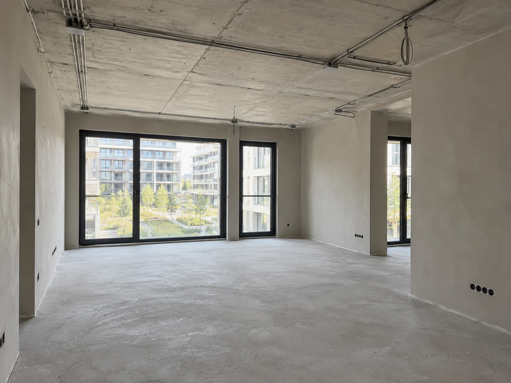

Штукатурка завершена. Готовим электрику.
На этой неделе завершили штукатурку в гостиной и подготовили точки для розеток. Теперь можно увидеть геометрию комнат и расположение будущего освещения.
Ваш проект
движется вперёд.
Подготовили стены под чистовую отделку
Выровняли стены в гостиной и коридоре, оформили оконные откосы. Поверхности оставили на просушку. После высыхания проверим плоскости перед следующим этапом.
Продолжили разводку электрики
Установили подрозетники в гостиной и проложили кабельные трассы. На следующей неделе проверим линии и завершим точки в спальнях.
Каждая деталь —
на вашем экране.
Фото и видео за неделю.
Нажмите на кадр, чтобы рассмотреть.
Что дальше.
Просим до 8 октября подтвердить расположение розеток у прикроватных тумб. Это позволит завершить разводку без переделок.
Обсудить с командой184 500 ₽
Просим оплатить до 9 октября
Демонстрационный акт: ознакомьтесь с составом работ. Оплачивать этот пример не нужно.
Реквизиты и состав выполненных работ — в документе.
Всё ли понятно
по работам?
Если остались вопросы — разберём их вместе.